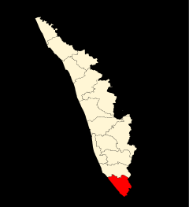

 Thiruananthapuram, the jewel in the emerald necklace that Kerala is for the Indian sub-continent, must surely have Parasuramanbeen a “must see” destination for ages, long before National Geographic Traveller classified it as one. Surely long before Sage Parasurama , according to local legend, threw his divine battle axe from Kanyakumari to Gokarnam to west Kerala, God’s own land, from the Varuna the sea god; before the times of Mahabali the democratic and just ruler of this wonderful land who was sent down to the netherworld through deceit. It doesnt take any flights of fancy to imagine that this land fired the imaginations of intrepid travellers and explorers like Columbus, Vasco da Gama, Marco Polo, Fa Hien, and quite possibly, countless others from the pages of history, recorded or not